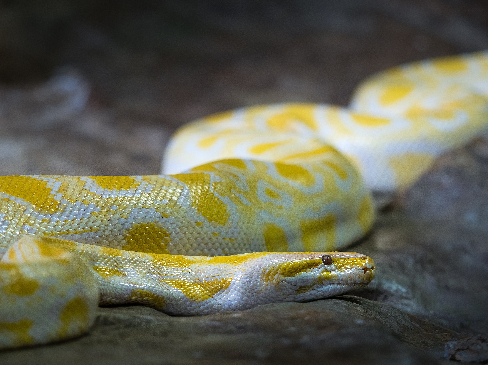
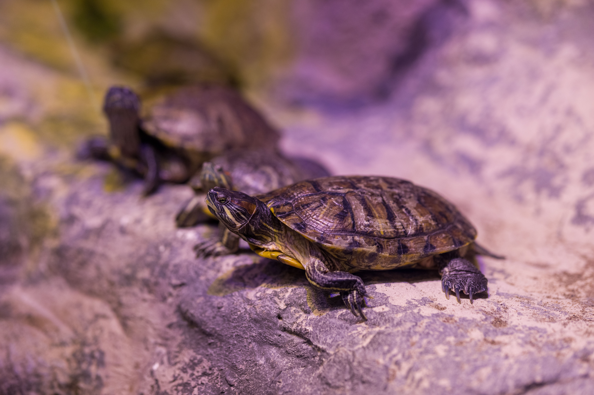
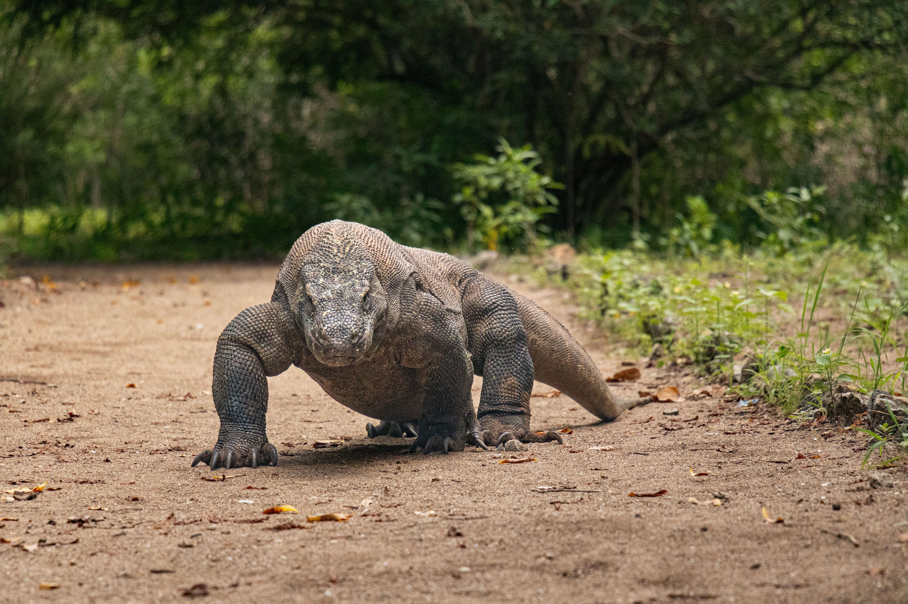
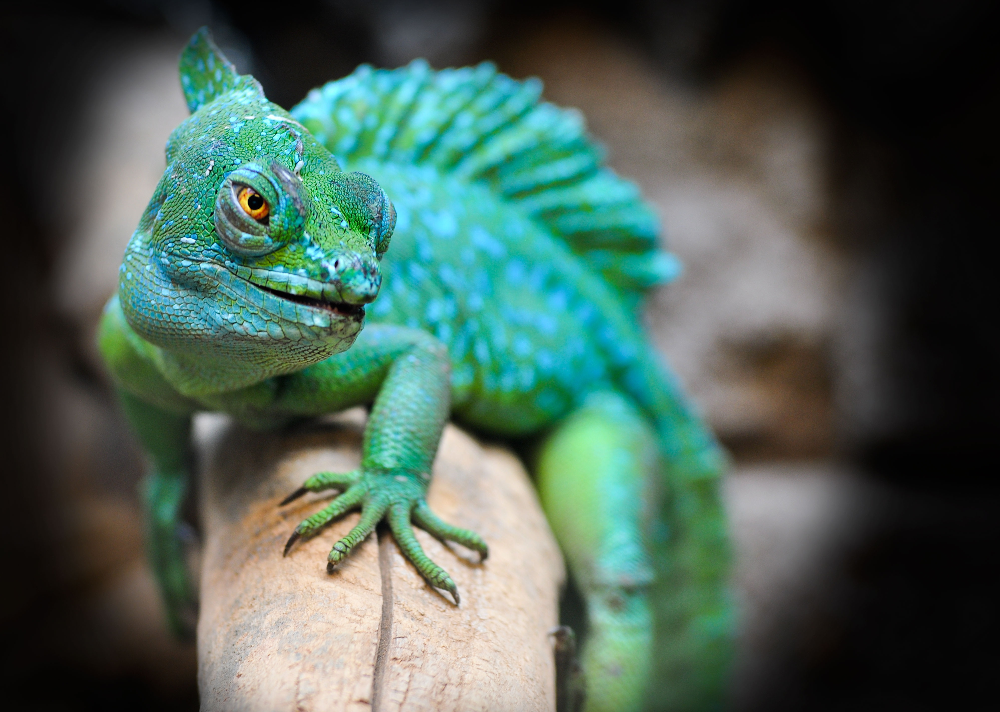
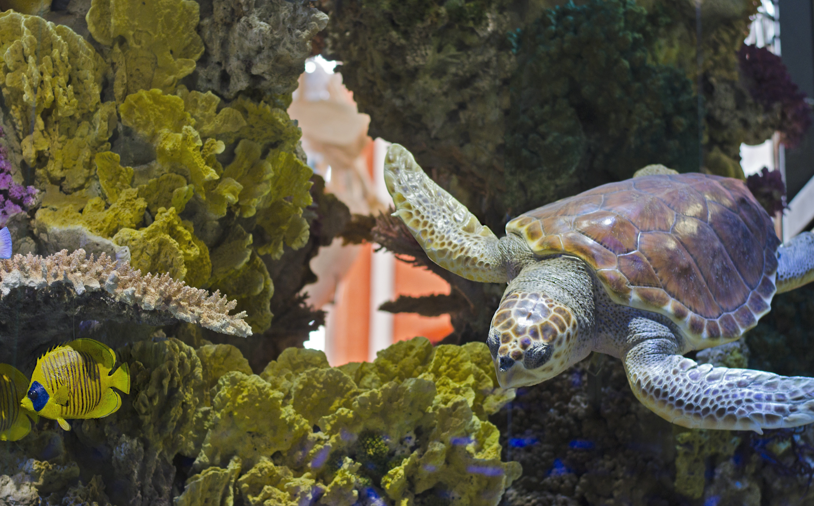
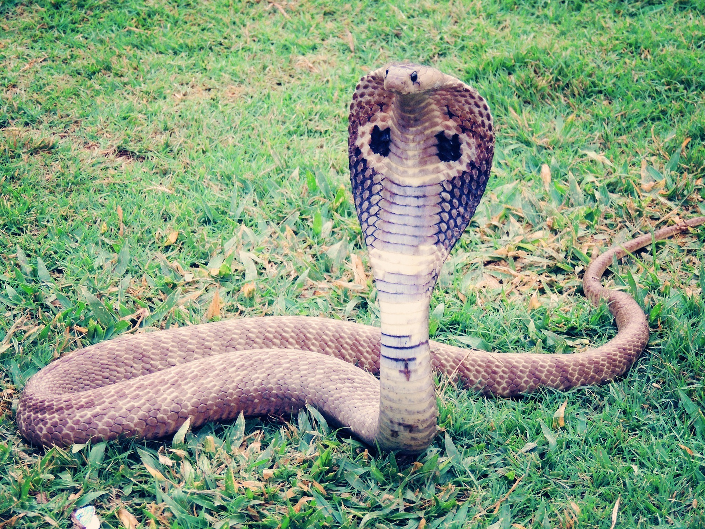
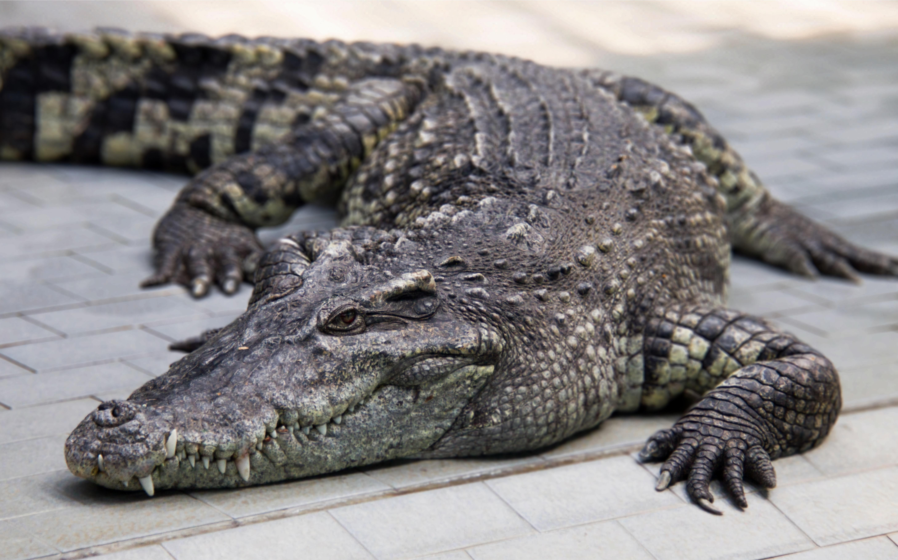

What are Reptiles?
Reptiles comprise the class Reptilia, featuring cold-blooded (ectothermic) vertebrates covered in specialized scales or bony plates. Unlike amphibians, their skin is waterproof, allowing them to thrive far away from constant bodies of water.
They represent a crucial milestone in evolutionary history, being the first major group of animals to completely conquer dry land through internal fertilization and shelled eggs.
Key Characteristics
1. Protective Scales: Made of keratin, scales and scutes protect reptiles from physical injury and prevent critical moisture loss under harsh sun.
2. Ectothermic Regulation: Relying on external environmental heat, they bask under sunlight to raise their body temperature or seek shade to cool down.
3. Amniotic Eggs: Most reptiles lay leathery or hard-shelled eggs on land equipped with internal membranes that protect and nourish the developing embryo.

Meet the Reptiles
While thousands of diverse reptilian species exist globally, here are four prominent and iconic representatives.

Komodo Dragon
The largest living lizard species on Earth, native to Indonesian islands with a formidable apex predator status.

Chameleon
An arboreal lizard famed for its specialized independently moving eyes, projectile tongue, and color-changing skin.

Sea Turtle
An ancient marine reptile adapted with flippers for long-distance ocean navigation and deep diving.

King Cobra
The world's longest venomous snake, recognized by its distinctive hood and highly specialized hunting skills.

Where Do Reptiles Live?
Reptiles inhabit every continent across the globe except Antarctica. Because they depend on external temperatures, they thrive best in warmer tropical and subtropical zones.
What Do Reptiles Eat?
Reptilian diets range widely from strict carnivory to specialized herbivory based on species classification.
Carnivores & Predators
Snakes, crocodiles, and monitor lizards consume whole prey, utilizing venom, sharp teeth, or constricting strength to hunt.
Herbivores
Iguanas and certain tortoises feed exclusively on vegetation, flowers, and fruits, helping process seeds through their digestive tracts.
Omnivores
Many turtles and bearded dragons maintain balanced diets incorporating insects, small fish, and varied plant matter.
💡 Did You Know?
Snakes do not have external ears; instead, they sense vibrations in the ground through jawbones connected to their inner ears.
Certain gecko species can walk effortlessly across smooth glass ceilings using millions of microscopic hair-like bristles on their toes.
Tuataras are living fossils native to New Zealand possessing a unique "third eye" on top of their heads sensitive to light cycles.
Quick Facts
11,000+
Recognized reptile species worldwide
Worldwide
Found across all continents except Antarctica
Ectothermic
Relying on external environmental heat